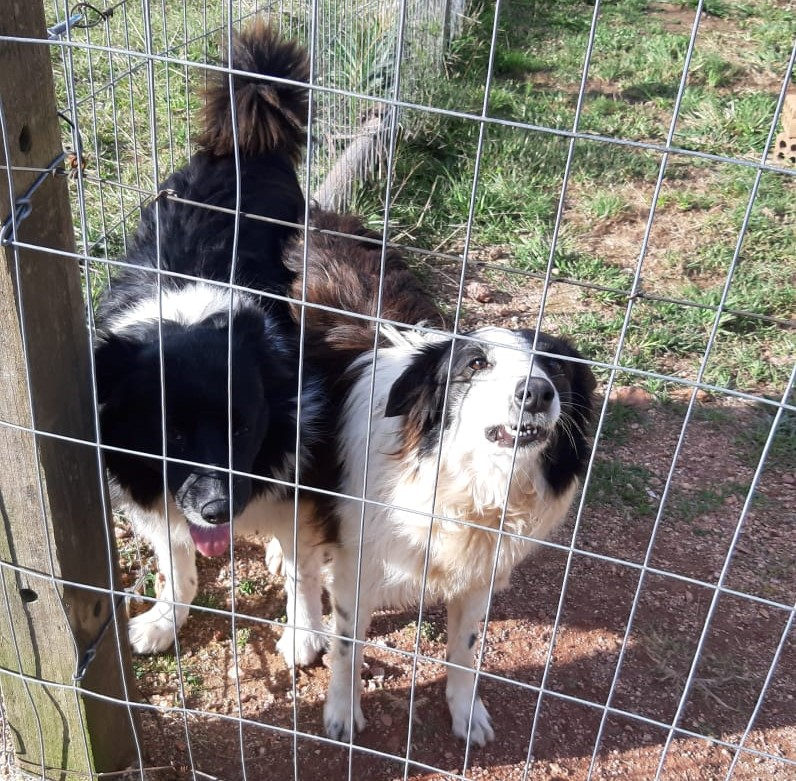
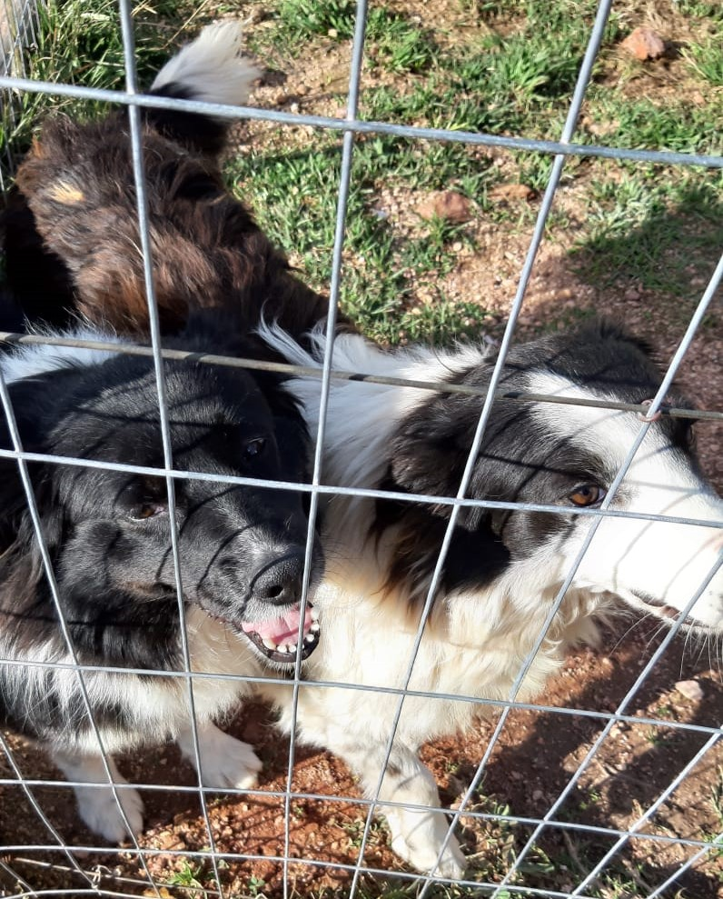

Pets do Gabs - Cachorros


- Nomes: Vitória e Flor (da esquerda pra direita).
- Origem: Resgatadas.
- Curiosidades: Adoram canela de Gari/Carteiro; Estéricas e carentes; A Vitória tem o rabinho encaracolado e a Flor um fucinho desproporcional ao rosto.
 Voltar
Voltar